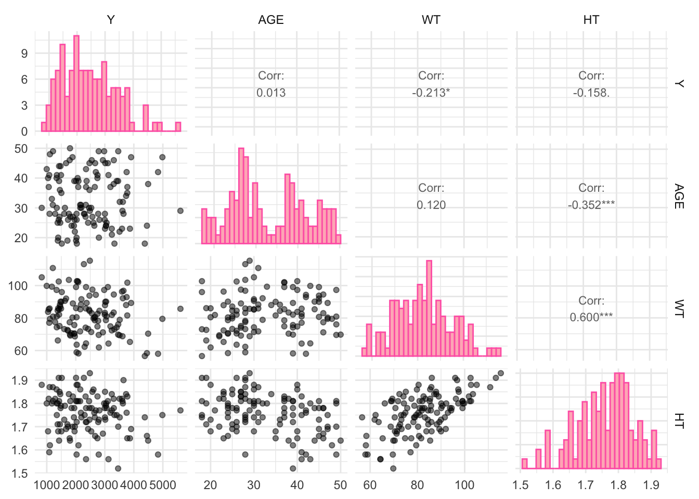
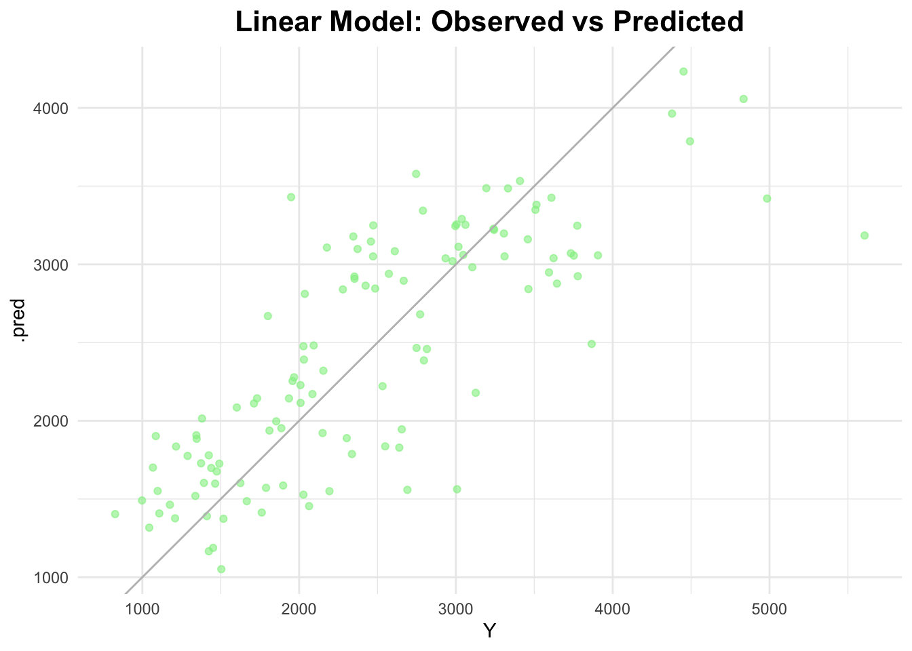
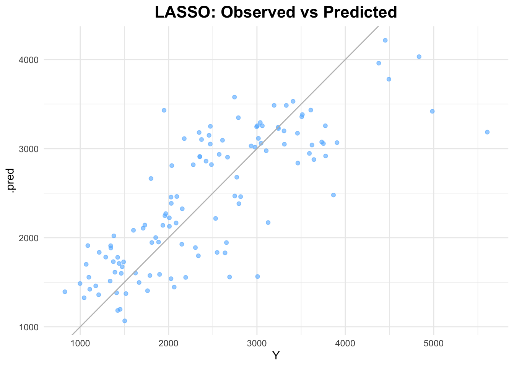
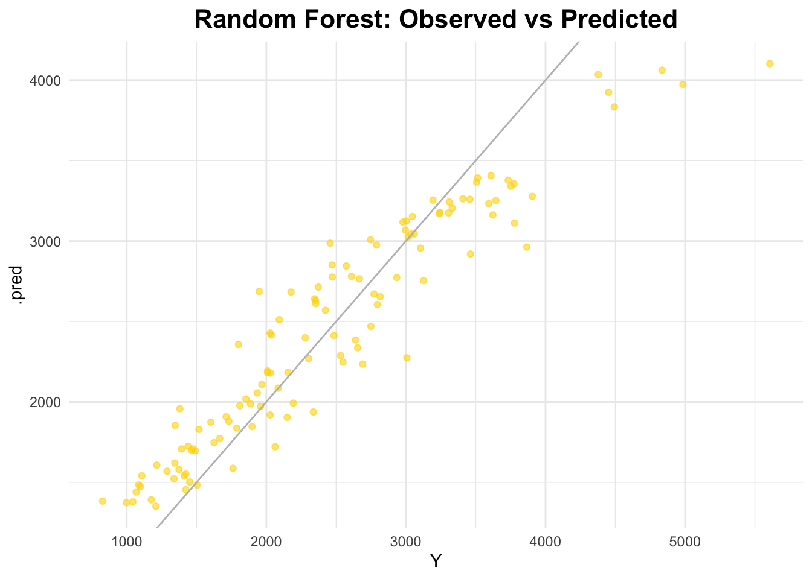
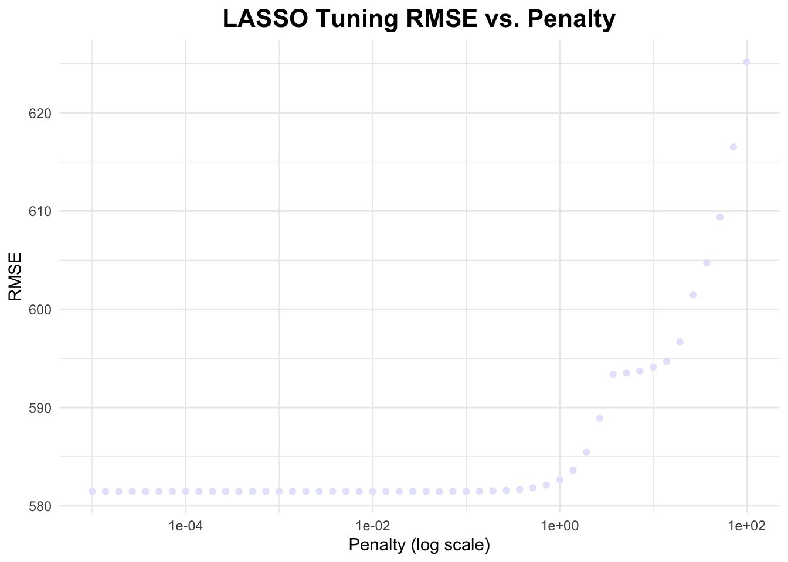
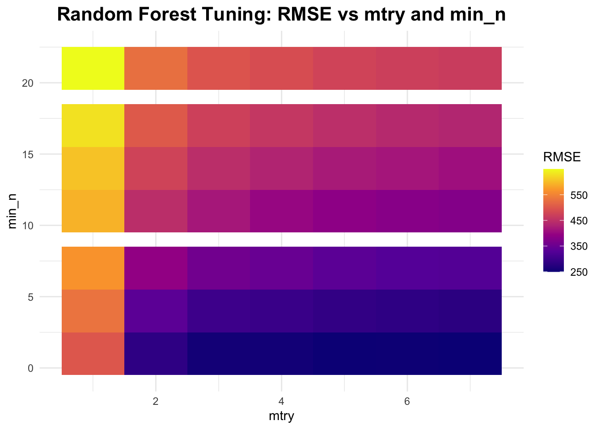
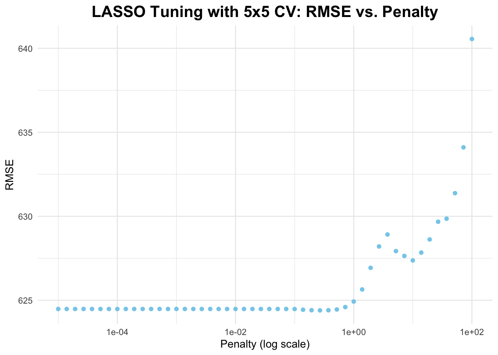
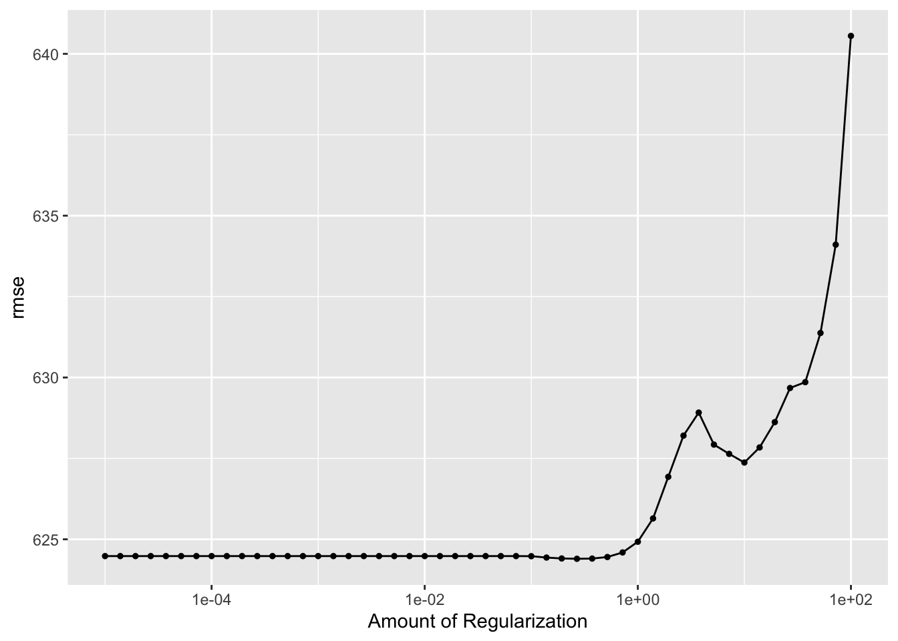
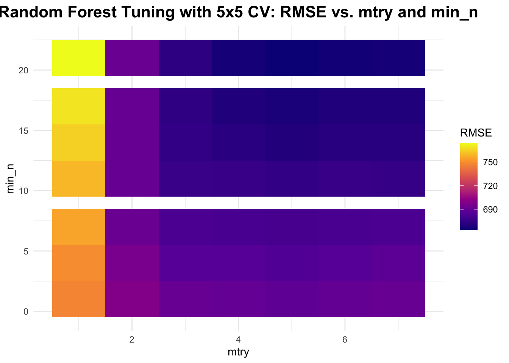
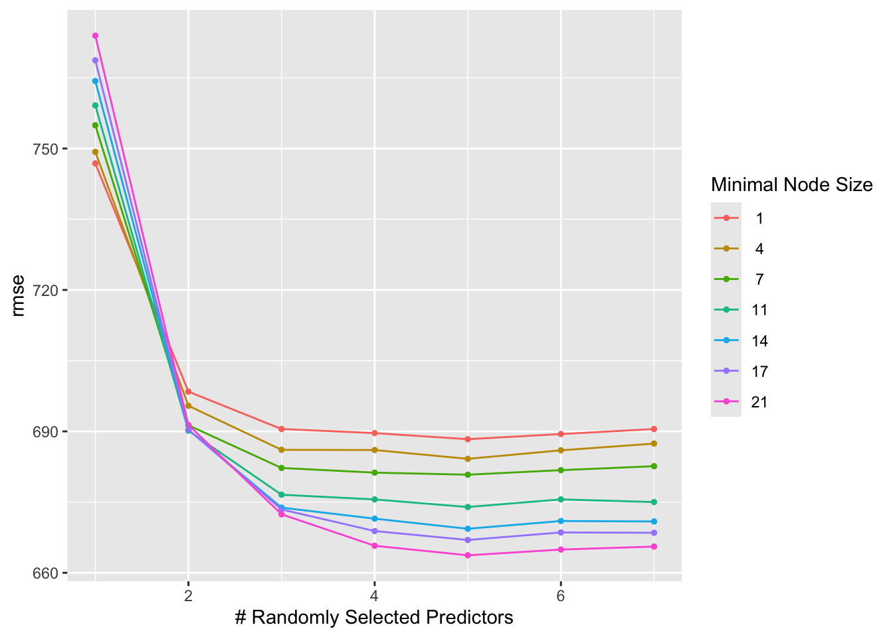

Attaching package: 'kableExtra'
The following object is masked from 'package:dplyr':
group_rows
library(readr)library(here)
here() starts at /Users/nataliecann/Desktop/MADA/nataliecann-MADA-portfolio
library(naniar)library(GGally)
Registered S3 method overwritten by 'GGally':
method from
+.gg ggplot2
library(yardstick)
Attaching package: 'yardstick'
The following object is masked from 'package:readr':
spec
library(caret)
Loading required package: lattice
Attaching package: 'caret'
The following objects are masked from 'package:yardstick':
precision, recall, sensitivity, specificity
The following object is masked from 'package:purrr':
lift
Loading required package: Matrix
Attaching package: 'Matrix'
The following objects are masked from 'package:tidyr':
expand, pack, unpack
Loaded glmnet 4.1-8
Setting Seed
rngseed =1234# specified value in class instructionsset.seed(rngseed)
Loading in Clean Data (from Fitting Exercise)
data <-read_rds(here("fitting-exercise","data_joined_filtered.rds"))
More Processing
I am now going to attempt to figure out what the values for the RACE variable stand for. I am assuming 1, 2, and 7 each refer to a single race/other and 88 may stand for NA. I have seen values such as ‘999’ and so on represent NAs in other datasets.
unique(data$RACE)
[1] 2 1 88 7
Levels: 1 2 7 88
I will now write code that combines 7 and 88 into one single category (called ‘3’).
# combining 7 and 88 into a single category (RACE == 3)data <- data %>%mutate(RACE =if_else(RACE ==1, 1,if_else(RACE ==2, 2, 3)))# ensuring this workedtable(data$RACE)
1 2 3
74 36 10
This worked, as we see there are ten values under category RACE == 3.
Pairwise Correlations
Now, I will make a pairwise correlation plot for the continuous variables.
# Select only continuous variablescontinuous_vars <- data %>%select(Y, AGE, WT, HT)# Create a pairwise correlation plotggpairs(continuous_vars, lower =list(continuous =wrap("points", alpha =0.5)), upper =list(continuous =wrap("cor", size =3)),diag =list(continuous =wrap("barDiag", color ="hotpink", fill ="lightpink"))) +theme_minimal()
`stat_bin()` using `bins = 30`. Pick better value with `binwidth`.
`stat_bin()` using `bins = 30`. Pick better value with `binwidth`.
`stat_bin()` using `bins = 30`. Pick better value with `binwidth`.
`stat_bin()` using `bins = 30`. Pick better value with `binwidth`.

Some variables have strong correlations but nothing is VERY strong (above - or + 0.90).
Feature Engineering (Creating New Variables)
I will create a new variable called BMI (Body Mass Index) from the WT and HT variables. I will use the following formula I found to calculate BMI: WT/HT^2.
# create BMI variable from WT and HTdata <- data %>%mutate(BMI = WT/(HT^2))# checking to make sure this workedcolnames(data)
[1] "Y" "DOSE" "AGE" "SEX" "RACE" "WT" "HT" "BMI"
This worked since we see the “BMI” variable appearing.
Model Building
During this section of the exercise, I will create three models: one with all of the predictors, a LASSO regression, and a random forest (RF).
First Fit
First, I will run a linear model with all of the predictors of Y in the dataset.
# define the linear modellm_all <-linear_reg() %>%set_engine("lm")lm_recipe <-recipe(Y ~ ., data = data)# create a workflowlm_workflow <-workflow() %>%add_model(lm_all) %>%add_recipe(lm_recipe)# fit the modellm_fit <- lm_workflow %>%fit(data = data)# predict on the full datasetlm_predictions <-predict(lm_fit, data) %>%bind_cols(data)# RMSElm_rmse <- lm_predictions %>%rmse(truth = Y, estimate = .pred)lm_rmse
# A tibble: 1 × 3
.metric .estimator .estimate
<chr> <chr> <dbl>
1 rmse standard 581.
# plot observed vs predictedggplot(lm_predictions, aes(x = Y, y = .pred)) +geom_point(alpha =0.6, color ="lightgreen") +geom_abline(slope =1, intercept =0, color ="gray") +labs(title ="Linear Model: Observed vs Predicted") +theme_minimal() +theme(plot.title =element_text(hjust =0.5, # center the titleface ="bold", # make title boldsize =16) # make title bigger )

Note that the RMSE from the linear fit is 581.4177.
Next, I will use the glmnet engine for the LASSO model. Per class instructions, the penalty will be set to 0.1.
# define the LASSO modellasso_model <-linear_reg(penalty =0.1, mixture =1) %>%set_engine("glmnet")lasso_recipe <-recipe(Y ~ ., data = data) %>%step_dummy(all_nominal_predictors())# create a workflowlasso_workflow <-workflow() %>%add_model(lasso_model) %>%add_recipe(lasso_recipe)# fit the modellasso_fit <- lasso_workflow %>%fit(data = data)# predict on the full datasetlasso_predictions <-predict(lasso_fit, data) %>%bind_cols(data)# RMSElasso_rmse <- lasso_predictions %>%rmse(truth = Y, estimate = .pred)lasso_rmse
# A tibble: 1 × 3
.metric .estimator .estimate
<chr> <chr> <dbl>
1 rmse standard 581.
# plot observed vs predictedggplot(lasso_predictions, aes(x = Y, y = .pred)) +geom_point(alpha =0.6, color ="steelblue1") +geom_abline(slope =1, intercept =0, color ="gray") +labs(title ="LASSO: Observed vs Predicted") +theme_minimal() +theme(plot.title =element_text(hjust =0.5, # center the titleface ="bold", # make title boldsize =16) # make title bigger )

The RMSE for the LASSO model is 581.4708.This is very similar to the RMSE from the linear model. It can also be noted that the scatterplots look similar.
I will use the ranger engine for the random forest model.
# define the RF model (set seed in engine for reproducibility)rf_model <-rand_forest() %>%set_engine("ranger", seed =1234) %>%set_mode("regression")rf_recipe <-recipe(Y ~ ., data = data)# create a workflowrf_workflow <-workflow() %>%add_model(rf_model) %>%add_recipe(rf_recipe)# fit the modelrf_fit <- rf_workflow %>%fit(data = data)# predict on the full datasetrf_predictions <-predict(rf_fit, data) %>%bind_cols(data)# RMSErf_rmse <- rf_predictions %>%rmse(truth = Y, estimate = .pred)rf_rmse
# A tibble: 1 × 3
.metric .estimator .estimate
<chr> <chr> <dbl>
1 rmse standard 359.
# plot observed vs predictedggplot(rf_predictions, aes(x = Y, y = .pred)) +geom_point(alpha =0.6, color ="gold") +geom_abline(slope =1, intercept =0, color ="gray") +labs(title ="Random Forest: Observed vs Predicted") +theme_minimal() +theme(plot.title =element_text(hjust =0.5, # center the titleface ="bold", # make title boldsize =16) # make title bigger )

The RMSE for the random forest model is 358.824, which is smaller than both the LASSO and linear fit models. A smaller RMSE is typically better. The points on the scattplot appear to follow the diagonal line best in this model as well. Random forest models are typically very flexible and capture lots of patterns. However, a downside is that they tend to be prone to overfitting.
After searching a bit about the LASSO and linear fit models, it looks like the two models perform similarly here due a lack of strong correlation within the data (as seen in the pairwise correlation plot).
Tuning the Models (without CV)
Both the LASSO and Random Forest models have parameters that need to be tuned. Per class instruction, I will tune without cross-validation; meaning that model performance will be evaluated on the data used for tuning. This means overfitting is likely to happen.
First, I will tune the LASSO model.
# define penalty gridpenalty_grid <-10^seq(log10(1E-5), log10(1E2), length.out =50) # 50 values from 1E-5 to 1E2# define LASSO model lasso_model <-linear_reg(penalty =tune()) %>%set_engine("glmnet") %>%set_mode("regression")# create workflowlasso_workflow <-workflow() %>%add_model(lasso_model) %>%add_formula(Y ~ .)# create resampling resamples <-apparent(data)# tuning lasso_tuning_results <-tune_grid( lasso_workflow,resamples = resamples,grid =tibble(penalty = penalty_grid),metrics =metric_set(rmse),control =control_grid(save_pred =TRUE) # Ensure predictions are stored)# tuning resultslasso_results <-collect_metrics(lasso_tuning_results)lasso_tune_rmse <- lasso_tuning_results$.metrics[[1]]# graphing RMSE vs. penaltyggplot(lasso_tune_rmse, aes(x = penalty, y = .estimate)) +geom_point(color ="lavender") +scale_x_log10() +labs(title ="LASSO Tuning RMSE vs. Penalty",x ="Penalty (log scale)",y ="RMSE") +theme_minimal() +theme(plot.title =element_text(hjust =0.5, # center the titleface ="bold", # make title boldsize =16) # make title bigger )

We see that RMSE starts out relatively constant, but then increases as penalty increases in the graph above. The penalty parameter in LASSO controls the amount of regularization applied to the model. Regularization helps to prevent overfitting by shrinking the coefficients of the predictors. When the penalty is very small, the model behaves almost exactly like linear regression, with little to no regularization. This allows the model to fit the data closely, leading to a relatively low RMSE similar to what we observe with a standard linear regression model. When the penalty is higher, the model becomes more biased and a higher RMSE is observed.
Next, I will tune the random forest method.
# define the model specification using the ranger engine, with fixed trees at 300rf_tuning <-rand_forest(mode ="regression",mtry =tune(), min_n =tune(), trees =300) %>%set_engine("ranger", seed = rngseed)# create a workflowrf_tuning_workflow <-workflow() %>%add_model(rf_tuning) %>%add_formula(Y ~ .)# tuning gridrf_grid <-grid_regular(mtry(range =c(1, 7)), # mtry between 1 and 7min_n(range =c(1, 21)), # min_n between 1 and 21levels =7# 7 levels for each parameter to get 7 x 7 tuning parameters)# create resamplesresamples <-apparent(data)# tuningrf_tune_results <-tune_grid( rf_tuning_workflow,resamples = resamples,grid = rf_grid,metrics =metric_set(rmse),control =control_grid(save_pred =TRUE) )# tuning resultsrf_results <- rf_tune_results$.metrics[[1]]rf_results_df <-as.data.frame(rf_results) # data frame of results# create plotggplot(rf_results_df, aes(x = mtry, y = min_n, fill = .estimate)) +geom_tile() +scale_fill_viridis_c(option ="plasma") +# plasma colorslabs(title ="Random Forest Tuning: RMSE vs mtry and min_n",x ="mtry", y ="min_n", fill ="RMSE") +theme_minimal() +theme(plot.title =element_text(hjust =0.5, # center the titleface ="bold", # make title boldsize =16) # make title bigger )

From this plot, it can be seen that RMSE decreases as mtry increases; RMSE increases as min_n increases
Tuning the Models with CV
Now, I will tune the models with cross-validation. This is the proper way to perform tuning! I will do a 5-fold cross-validation, 5 times repeated.
# create 5x5 cross-validation objectcv_folds <-vfold_cv(data, v =5, repeats =5)# tune LASSO model using CVlasso_cv_results <-tune_grid( lasso_workflow,resamples = cv_folds,grid =tibble(penalty = penalty_grid),metrics =metric_set(rmse),control =control_grid(save_pred =TRUE))# resultslasso_cv_results_df <-collect_metrics(lasso_cv_results)# plot resultsggplot(lasso_cv_results_df, aes(x = penalty, y = mean)) +geom_point(color ="skyblue") +scale_x_log10() +labs(title ="LASSO Tuning with 5x5 CV: RMSE vs. Penalty",x ="Penalty (log scale)",y ="RMSE") +theme_minimal() +theme(plot.title =element_text(hjust =0.5, face ="bold", size =16) )

autoplot(lasso_cv_results) # autoplot - looks same

From the graph above of the tuning results (with CV), we see that RMSE remains relatively constant and then suddenly starts to increase as penalty increases.
Now, I will tune the RF model with CV.
# create 5x5 cross-validation objectcv_folds <-vfold_cv(data, v =5, repeats =5) # same object as above# tune Random Forest model using CVrf_cv_results <-tune_grid( rf_tuning_workflow,resamples = cv_folds,grid = rf_grid,metrics =metric_set(rmse),control =control_grid(save_pred =TRUE))# resultsrf_cv_results_df <-collect_metrics(rf_cv_results)# plot resultsggplot(rf_cv_results_df, aes(x = mtry, y = min_n, fill = mean)) +geom_tile() +scale_fill_viridis_c(option ="plasma", name ="RMSE") +labs(title ="Random Forest Tuning with 5x5 CV: RMSE vs. mtry and min_n",x ="mtry", y ="min_n") +theme_minimal() +theme(plot.title =element_text(hjust =0.5, # center the titleface ="bold", # make title boldsize =16) # make title bigger )

autoplot(rf_cv_results)

From the graphs above, you can see that RMSE still decreases as mtry increases and that RMSE increases as min_n increases.
Comparison of Tuning Without vs With CV (LASSO and RF)
From the graphs above, we see that LASSO works best when there is a small penalty. Compared to RF, the LASSO model has a lower RMSE. This could be due to the fact that RF is more complex than LASSO and is therefore more prone to overfitting. From the results of this exercise, I believe that we can state the LASSO model performs better than the RF model.